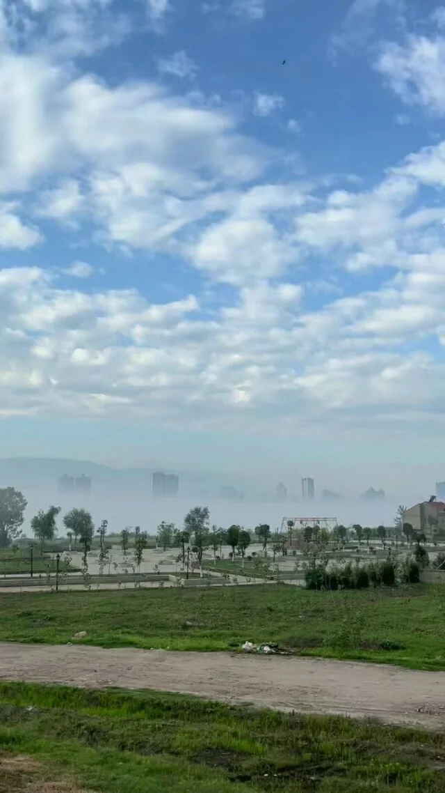
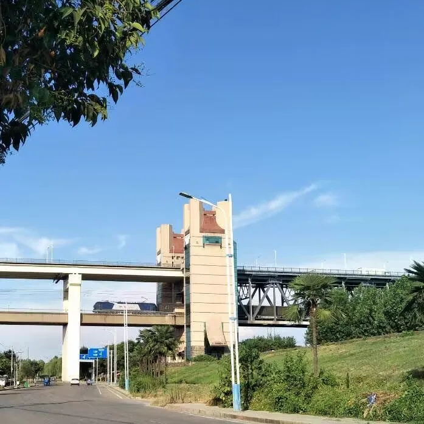

Journal · 2024-06-26
湖北省武汉市洪山区
这天的日记没有留下文字，只有三张照片和一段视频。
六月末的武汉，正是最闷热的时候。也许那天太累了，也许发生的事情太多反而不想写。但现在回头看，这些无声的画面比任何文字都诚实——它们不解释，不辩护，只是在。

No written words remain from this day—only three photos and a video.
Late June in Wuhan, at the peak of the stifling heat. Maybe I was too exhausted that day. Maybe so much happened that writing felt pointless. But looking back now, these silent images are more honest than any words could be. They don't explain, they don't defend. They simply are.
Aucun mot ne reste de ce jour—seulement trois photos et une vidéo.
Fin juin à Wuhan, au plus fort de la chaleur étouffante. Peut-être étais-je trop épuisé ce jour-là. Peut-être que tant de choses se sont passées qu'écrire semblait inutile. Mais en regardant en arrière, ces images silencieuses sont plus honnêtes que n'importe quels mots. Elles n'expliquent pas, elles ne défendent rien. Elles sont, tout simplement.
Von diesem Tag sind keine Worte geblieben—nur drei Fotos und ein Video.
Ende Juni in Wuhan, auf dem Höhepunkt der drückenden Hitze. Vielleicht war ich an jenem Tag zu erschöpft. Vielleicht geschah so viel, dass Schreiben sinnlos schien. Aber im Rückblick sind diese stillen Bilder ehrlicher, als Worte es je sein könnten. Sie erklären nichts, sie verteidigen nichts. Sie sind einfach.
